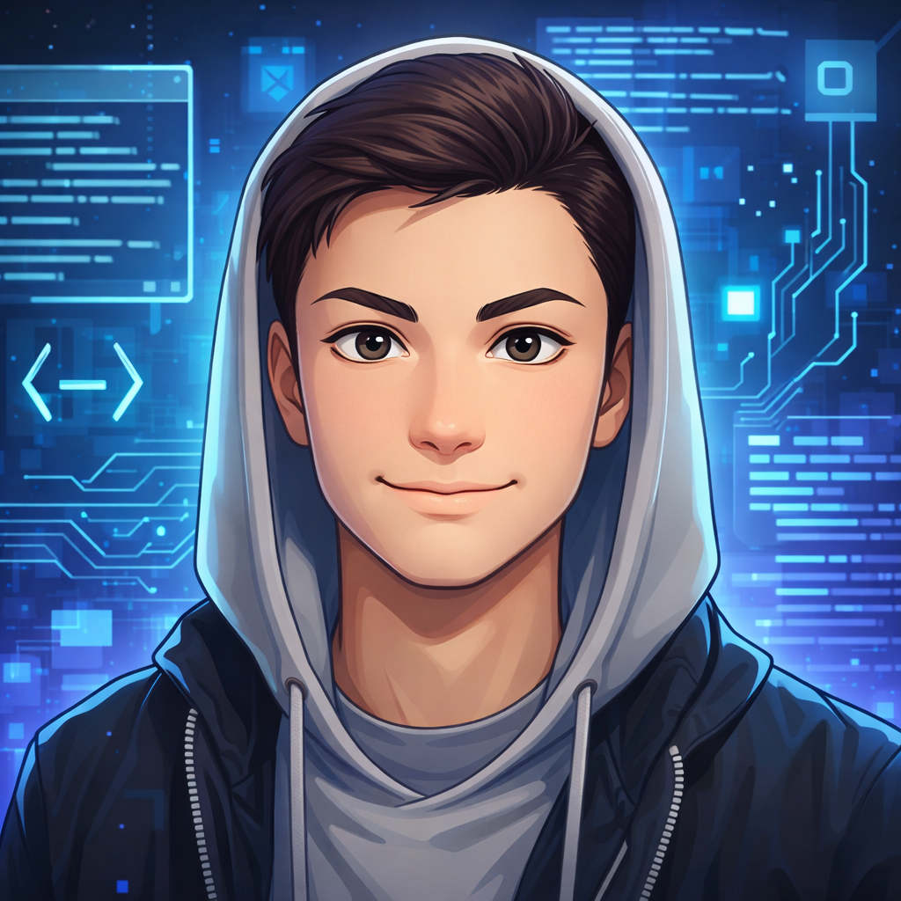

O mnie
Jestem młodym i utalentowanym specjalistą IT z szeroko pojętą wiedzą na temat sieci, frontendu oraz sprzętu komputerowego. Od ponad 3 lat zajmuję się projektowaniem oraz wdrażaniem lokalnych sieci komputerowych, a także tworzeniem nowoczesnych i interaktywnych aplikacji internetowych. Posiadam również doświadczenie w sprzedarzy detalicznej wynikające z mojej działalności nierejestrowalnej funkcjonującej na popularnych portalach aukcyjnych. Stale się uczę nowych rzeczy oraz szlifuję już zdobyte umiejętności aby uzyskiwać jak najlepsze wyniki.
Planuję i wdrażam lokalne sieci komputerowe z wykorzystaniem programu Cisco Packet Tracert
Tworzę zaawansowane i nowoczesne strony i aplikacje internetowe wraz z podłączoną bazą danych i agentami AI
Serwisuję sprzęt komputerowy przy użyciu profesjonalnych narzędzi i technik
Doświadczenie
Moja ścieżka zawodowa to połączenie technicznej pasji do infrastruktury IT z praktycznym podejściem do biznesu. Doświadczenie zdobywałem zarówno w strukturach administracji publicznej (RCI Warszawa), jak i budując od podstaw własną działalność e-commerce. Stawiam na rzetelność, profesjonalizm i stały rozwój kompetencji cyfrowych. To wszystko było również przeplatane wieloma własnymi projektami zarówno twórczych jak i finansowych.

Na początku 2025 roku odbyłem miesięczne praktyki w jednym z Warszawskich oddziałów RCI. Zdobyłem tam praktyczne umiejętności montażu urządzeń sieciowych oraz okablowania strukturalnego. Poznałem również metody sterowania użądzeniami poprzez zewnętrzny terminal.
Od ponad 3 lat aktywnie zajmuję się handlem na popularnych portalach sprzedarzowych. Przez ten okres czasu zdobyłem liczną bazę zadowolonych klientów, środki na dalszy rozwój i co najważniejsze, bezcenne doświadczenie sprzedażowe i negocjacyjne, a także umiejętności komunikacyjne.
Umiejętności
Od 4 lat jestem uczniem techniukum o profilu Technik Informatyk. To tam nauczyłem się podstaw na temat sieci, kodowania, a także elektroniki. Szkoła zapewniła mi również dwa certyfikaty Cisco, co znacznie ułatwiło mi dalszą naukę w dziedzinie sieci. Oczywiście moja wiedza nie ogranicza się jedynie do tej ze szkoły, po za nią samodzielnie się rozwijam poprzez różne projekty, szkolenia oraz konferencje.
Posługuję się trzema językami Frontendu:
- HTML
- CSS
- JavaScript
Oraz trzema Backendu:
- Python
- C++
- SQL + trochę PHP
Administruję lokalnymi sieciami co potwierdzają moje dwacertyfikayty Cisco Network Academy
- Cisco Essential v7
- Cisco CCNA v7
Naprawiam sprzęt komputerowy jak i mniejszą elektronikę, a także rozwiązuję problemy software'owe
Potrafię się dobrze skomunikoać z zespołem lub klientem, co zapewnia stabilność pracy i dobre stosunki międzyludzkie
Dzięki mojej komunikatywności i doświadczeniu w sprzedaży wypracowałem umiejętności negocjacyjne i sprzedażowe, dzięki czemu jestem w stanie zapewnić firmie zysk, a klientowi dobry produkt
Porozumiewam się za pomocą dwóch języków obcych:
- Angielski - B2/C1
- Niemiecki - komunikatywny
Co pozwala mi podróżować po świecie bez stresu o komunikację